Helping intermural sports players diagnose their injuries
Problem Thousands of college students participate in intermural sports each semester. Inevitably, many players receive injuries on the field. However, players are often uncertain of the nature of the injury and whether they should continue playing.
This project explores the problem area of injury self-diagnosis in intermural sports and aims to educate players with the injury knowledge so that they can make healthy decisions moving forward. Logistics
- Project Type: School
- Team: 3 Designers, 1 Researcher
- My Roles: Research, Interaction Design, User Testing
- Time Frame: 3 Months
- What kinds of injuries have you received on the field, if any?
- Have you been unsure of whether you could return to playing?
- Have there been instances when you kept on playing and ended up worsening your injury?
- Are there personal trainers available?
After the interviews transcripts were analyzed, the takeaways revealed that:
- Many players have received mild injuries, such as sprains, bruises, and muscle pulls
- Many players keep on playing after a mild injury because of adrenaline and peer pressure
- Many players who keep on playing end up worsening their injuries
- Usually not any expert trainers around during intermural games
- 911 calls work for extreme injuries, but not necessary for mild injuries
Moreover, several existing diagnosis tools were analyzed to learn current approaches. These tools included WebMD's SymptomChecker and Diagnose-Me.
The competitive analysis showed that many current solutions are not adapted to helping athletes efficiently diagnose their injuries. Some findings included:
- Users can be required to answer over 50 health questions before receiving a diagnosis, which can take too long for time-sensitive injuries
- Many app-based diagnosis tools require stable signal, which can lead to inconvenient app crashes depending on the user's location
- Informative: The solution should offer helpful advice on diagnosing an injury and whether to keep playing
- Convenient: The solution should be quick to access and self-diagnose
- Reliable: The solution should be able to function correctly under a variety of circumstances
Using these design criteria as guidance, three different design solutions were proposed:
- Mobile app with voice capabilities: Users are able to report injuries and receive a diagnosis; convenient because usually carry phone around; also can be hand-free; may not have signal though
- Kiosk: Centrally located beside field; able to help users diagnose themselves and give other body measurements; reliable because no need for signal 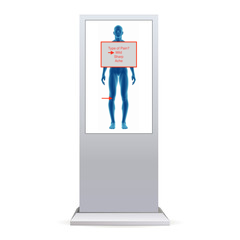 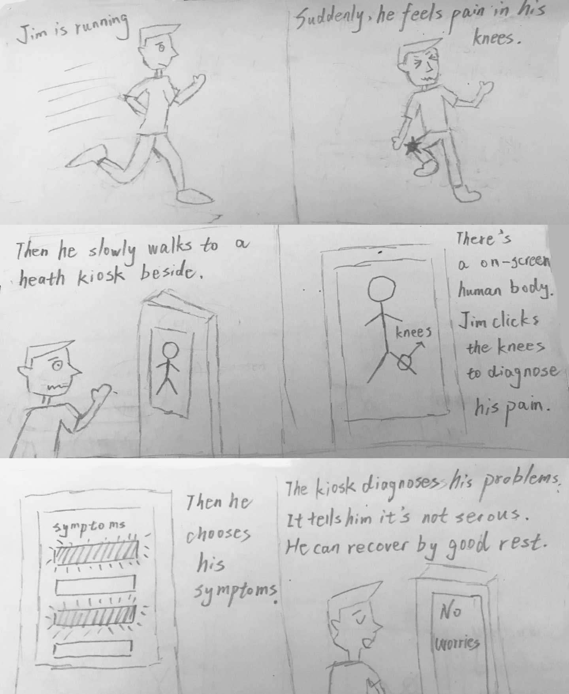
- Body suit: The suit detects injuries upon impact by emiting a red dye; good for players with high pain tolerances; difficult to prototype
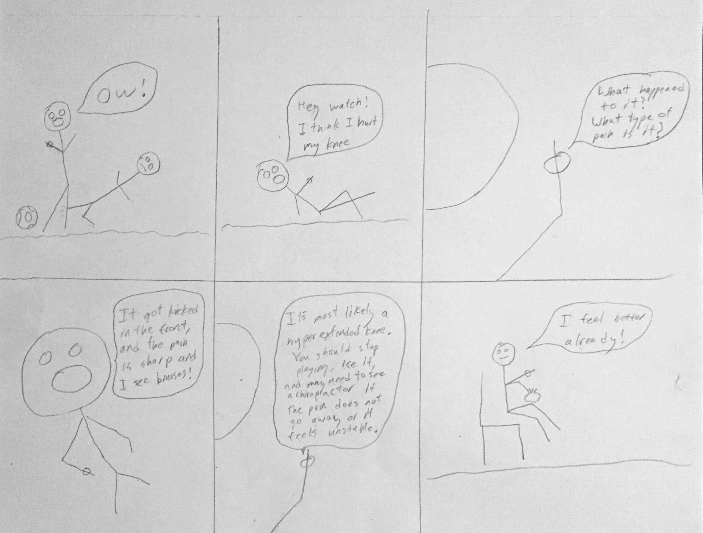 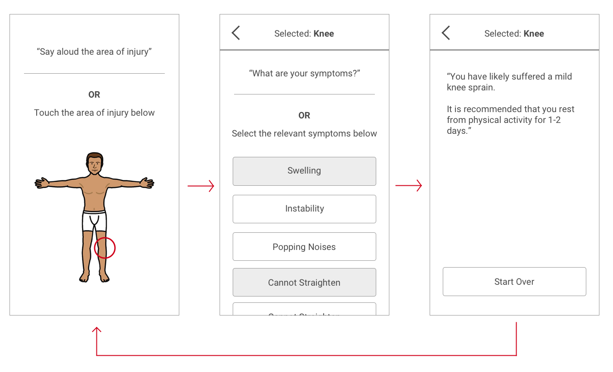
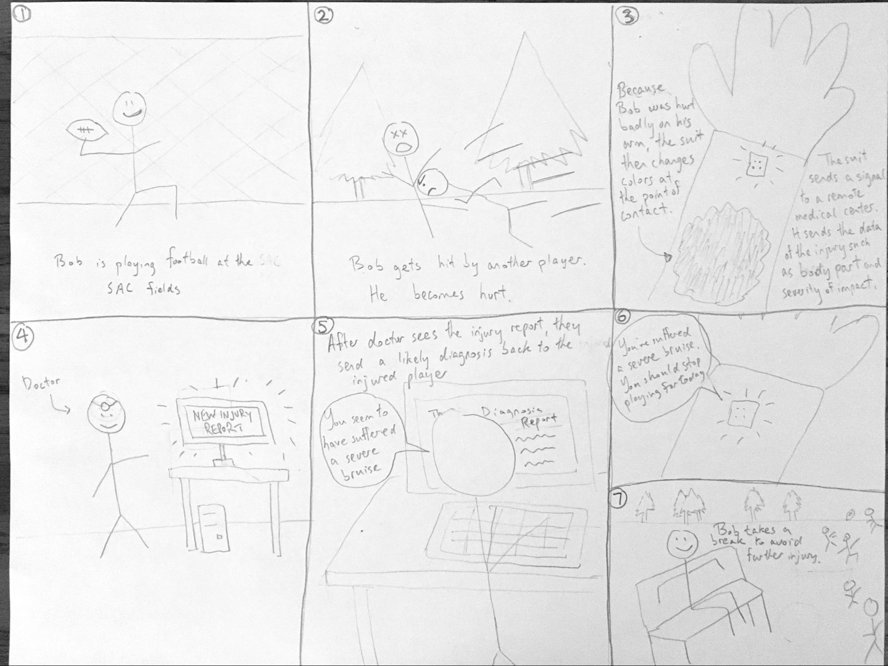
In the end, after peer review and trade-off analysis, the kiosk solution was chosen as it addressed the design criteria well:
- Reliable in that it doesn't require cell phone signal like a mobile app, or having a cellphone at all
- Convenient, central location that many people will know about
- Extra hardware for body measurements would allow for more accurate and informative diagnosis
- Diagnose an injury
- Learn about exercise routines for injury-prevention
- Get body measurements, like weight and heart rate
Next, a low-fidelity wireframe flow was sketched to act as a task blueprint:

Based on the wireframes, high-fidelity mockups were created. To solve the challenge of designers working remotely from one another, a style guide was used to promote consistency among the various designers:
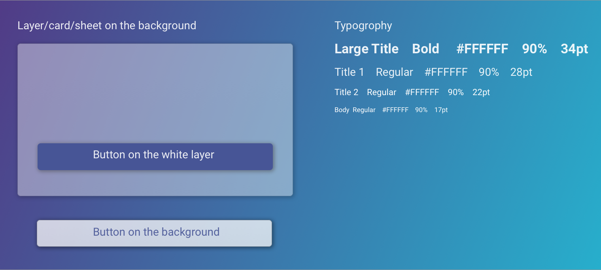

While the screen flows were being created, a sketch and high-fidelity render were concurrently designed for the physical kiosk model. There was an emphasis placed on conveying the physical hardware features of the kiosk for body measurements, such as a weight-sensitive platform and BPM handles.
 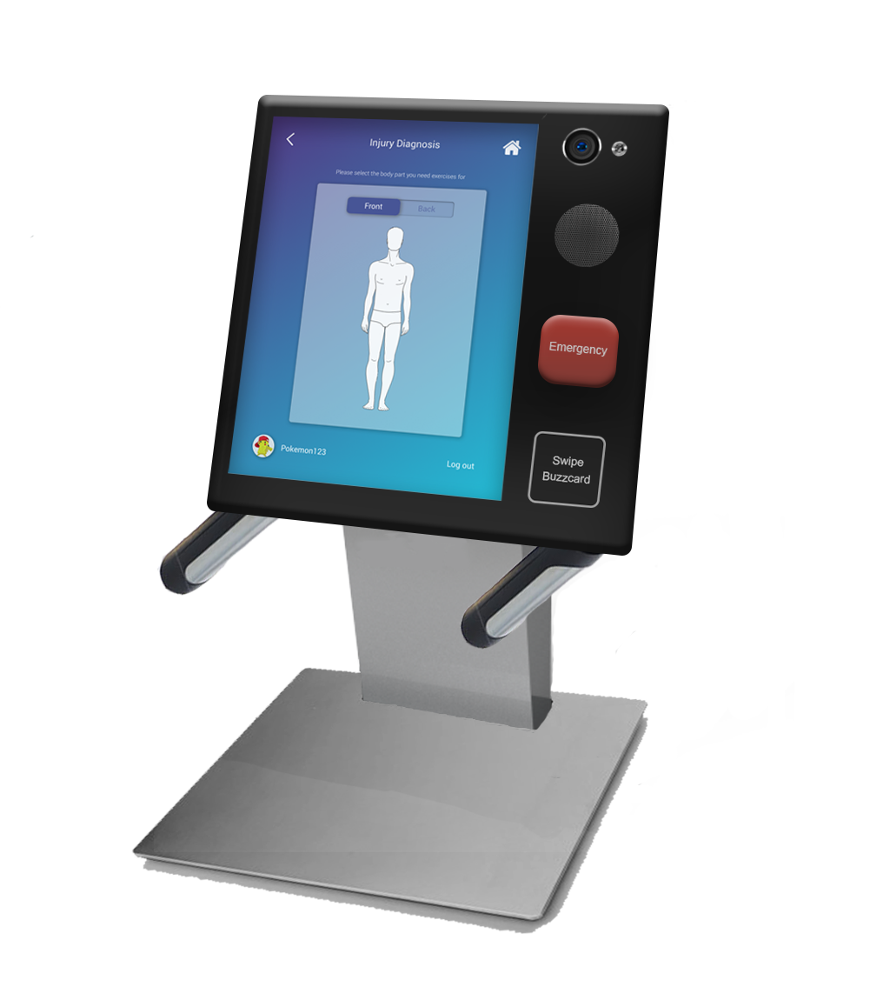
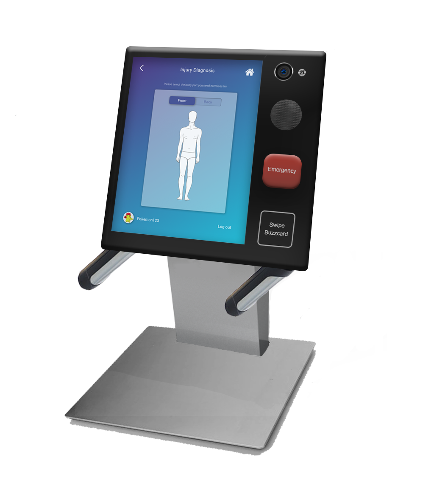
Lastly, an Invision prototype was created to link the high-fidelity mockups together. The prototype demo can be accessed below:
User Testing For user testing, heuristic evaluations and think-aloud walkthroughs were conducted using the prototype to gain feedback on the solution's usability and effectiveness in diagnosing injuries.
In the heuristic evaluation, five other students who were also taking human-computer interaction courses acted as the evaluators. Moreover, for the think-aloud walkthroughs, the kiosk prototype was setup near Georgia Tech's intramural fields to establish a realistic context. Nearby players were asked to perform several tasks.
For example, in one of the task scenarios, the participant is asked if one of their friend was hurt and exhibiting XYZ symptoms, how might they use the prototype to help diagnose their friend's injury?
Based on the heuristic evaluations, think-aloud sessions, and follow-up interviews, there were several key takeaways. At a high level, user feedback showed that the:
- Idea of a centralized health kiosk seemed reliable and useful
- Minimal, blue visual design conveyed a sense of professionalism and trustworthiness
- Large kiosk screen may lead to privacy concerns, especially for body measurements
- Exercise support feature may be underutilized due to the kiosk's lack of portability; many users preferred to carry a mobile exercise guide that can be accessed anywhere in the gym
At a low level with regards to UI design, the main usability takeaways included:
- In the process of selecting the area of injury on the human body diagram, users weren't sure what to do next after clicking a body part and seeing the body label pop-up:
- In the list of symptoms, it was unclear that one or more of the symptoms could be selected via touch:
- For the possible diagnoses, users did not understand the meaning of the bar visualizations - which represented the likelihood of a correct diagnosis. Users also didn't know that the conditions could be selected in order to learn more:
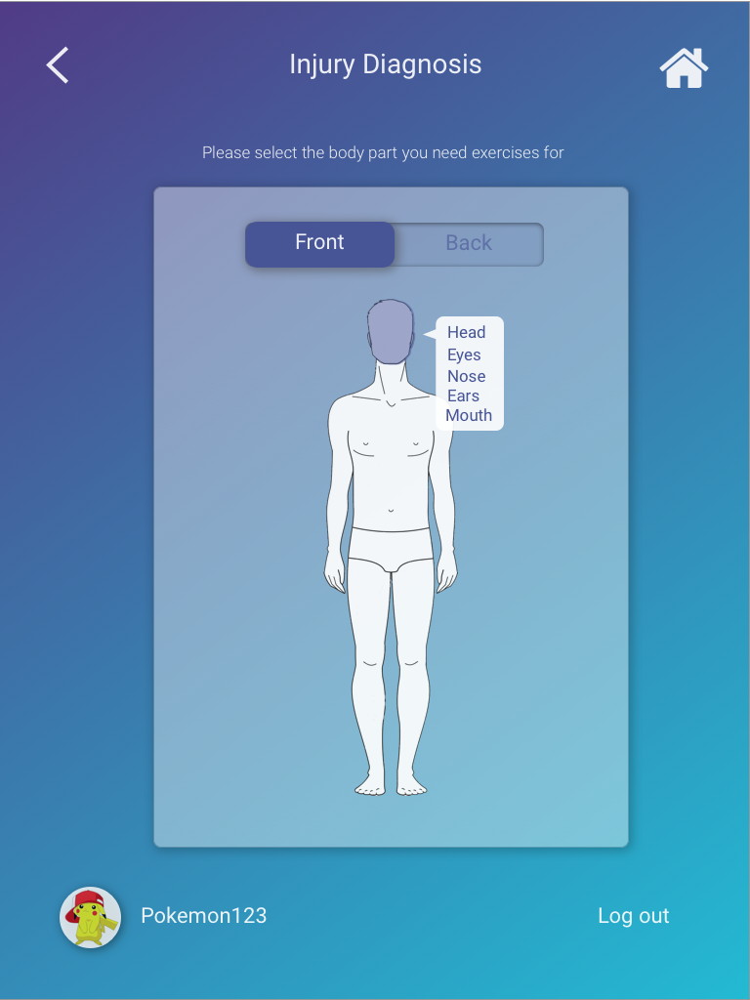
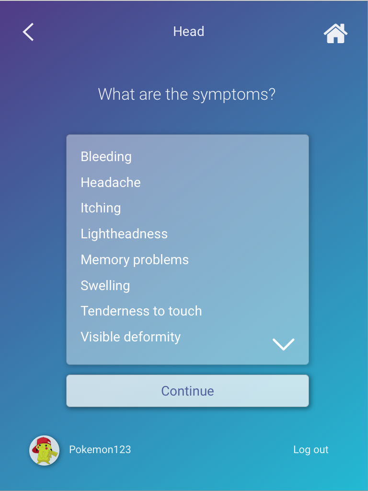
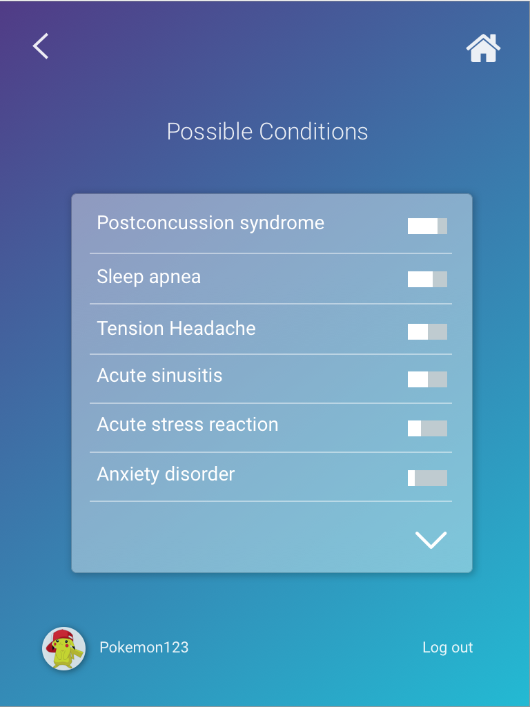
Firstly, to address the problem of users not knowing what to do after selecting an injured area of the body, arrows and lines were added to each body part label to make it more apparent that each label is selectable:
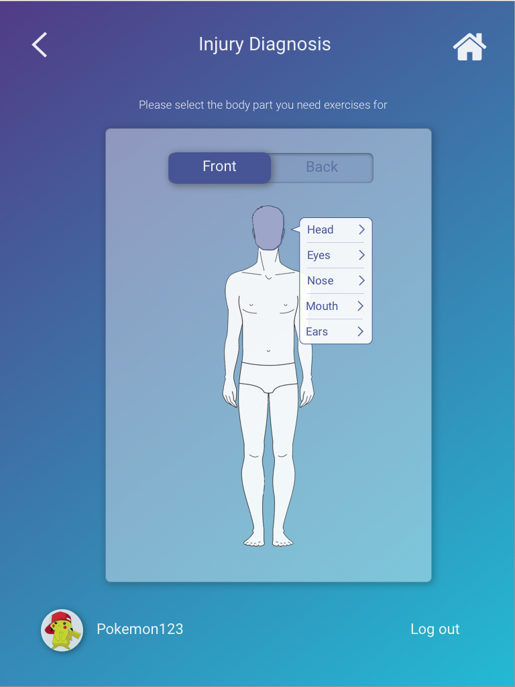
Similarly, in the list of symptoms, users did not know that the symptoms could be selected. A checkbox was added to each symptom to make it more clear that they were selectable:
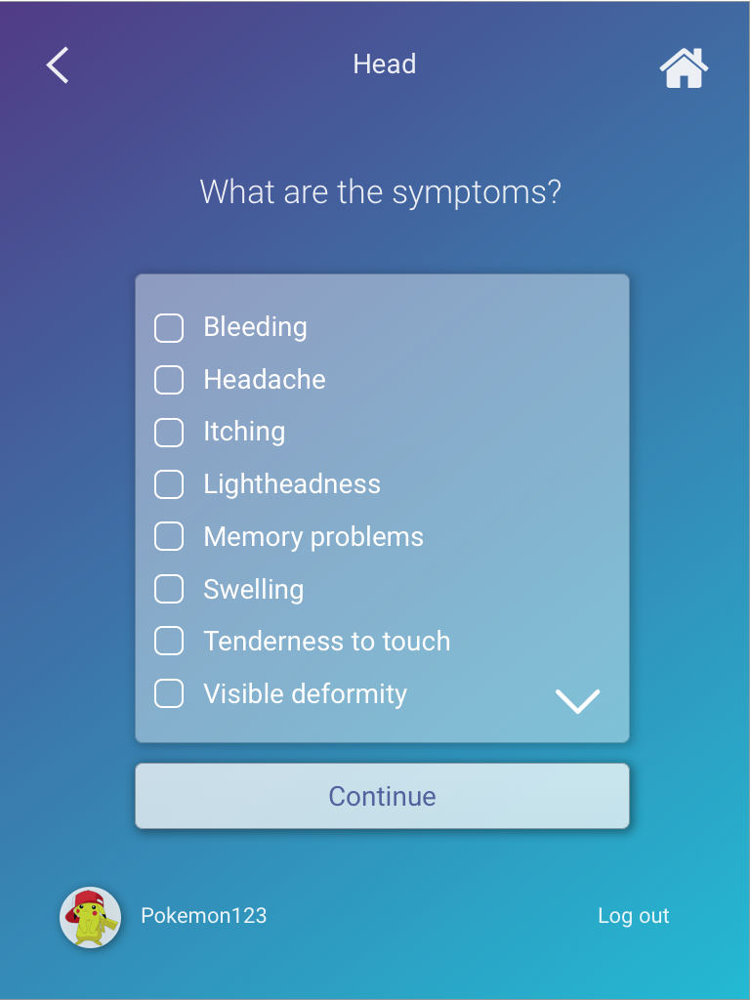
Last but not least, in the list of possible conditions, users did not understand the meaning of the bar visualizations and also did not know that the conditions could be selected to learn more about them. As a result, percentage labels and arrows were added to the symptoms:
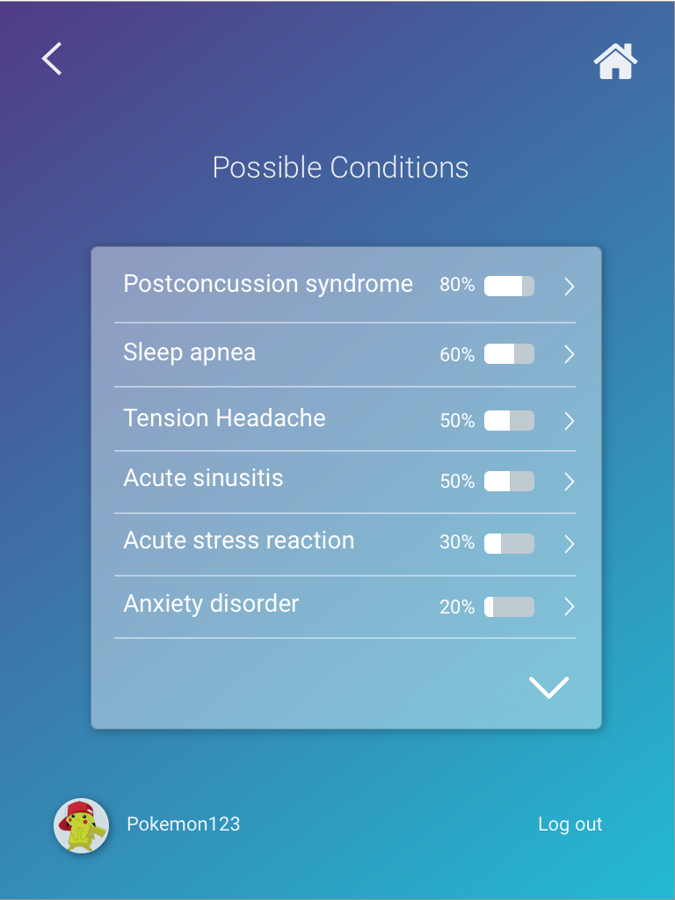
Impact and Final Thoughts
Overall, I really enjoyed working on this project with my classmates. We learned to overcome challenges of coordinating collaborative work and managing deliverables under time constraints.
Through our design process, we were able to create an accessible, reliable kiosk experience that improves upon existing solutions. Based on our findings, we confidently believe that intramural athletes would adopt our solution, leading to an overall decrease in injuries across intramural sports.